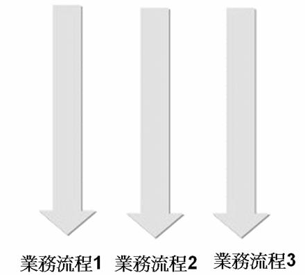
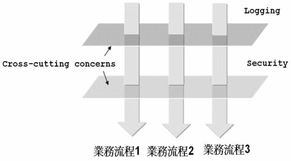
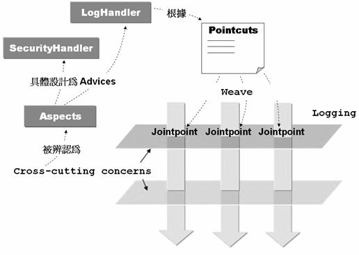

AOP 全名为 Aspect‐Oriented Programming，有关于 AOP 的许多名词术语都过于抽象，单从字面上 并不容易理解其名词意义，这边将以之前介绍代理机制的范例来逐一对照以介绍 AOP 的术语与 观念：
在 DynamicProxyDemo 专案的例子中，记录的 动作原先被横切（Cross‐cutting）入至 HelloSpeaker 本身所负责的商务流程之中，另外类似于日志这类的动作，如安全 （Security）检查、交易 （Transaction）等系统层面的服务（Service），在一些应用程式之中常被见到安插至各个物件的 处理流程之 中，这些动作在 AOP 的术语中被称之为 Cross‐cutting concerns。
以图片说明可强调出 Cross‐cutting concerns 的意涵，例如原来的商务流程是很单纯的：
Cross‐cutting concerns 若直接撰写在负责某商务的物件之流程中，会使得维护程式的成本增高， 例如若您今天要将物件中的记录功能修改或是移除该服务，则必须修改所 有撰写曾记录服务的 程式码，然后重新编译，另一方面，Cross‐cutting concerns 混杂于商务逻辑之中，使得商务物件 本身的逻辑或程式的撰写更为复杂。
现在为了要加入日志（Logging）与安全（Security）检查等服务，物件的程式码中若被硬生生的 写入相关的 Logging、Security 程式片段，则可使用以下图解表示出 Cross‐cutting 与 Cross‐cutting concerns 的概念：

Cross‐cutting concerns 若直接撰写在负责某商务的物件之流程中，会使得维护程式的成本增高， 例如若您今天要将物件中的日志功能修改或是移除该服务，则必须修改所 有撰写曾日志服务的 程式码，然后重新编译，另一方面，Cross‐cutting concerns 混杂于商务逻辑之中，使得商务物件 本身的逻辑或程式的撰写更为复杂。
将散落于各个商务物件之中的Cross‐cutting concerns收集起来，设计各个独立可重用的物件，这 些物件称之为Aspect ，例如在 动态代理 中 将日志的动作设计为一个LogHandler 类别， LogHandler类别在AOP的术语就是Aspect的一个具体实例，在AOP中着重于 Aspect的辨认，将之 从商务流程中独立出来，在需要该服务的时候，缝合（Weave）至应用程式之上，不需要服务的 时候，也可以马上从应用程式中脱 离，应用程式中的可重用元件不用作任何的修改，例如在 动 态代理 中的HelloSpeaker所代表的角色就是应用程式中可重用的元件，在它需要日志服务时并不 用修改本身的程式码。
另一方面，对于应用程式中可重用的元件来说，以 AOP 的设 计方式，它不用知道处理提供服务 的物件之存在，具体的说，与服务相关的 API 不会出现在可重用的应用程式元件之中，因而可提 高这些元件的重用性，您可以将 这些元件应用至其它的应用程式之中，而不会因为目前加入了 某些服务而与目前的应用程式框架发生耦合。
Aspect的具体实作称之为Advice，以日志的动作而言，Advice中会包括真正的日志程式码是如何 实作的，像是 动态代理 中的LogHandler 类别就是Advice 的一个具体实例，Advice 中包括了 Cross‐cutting concerns的行为或所要提供的服务。
Aspect 在应用程式执行时加入商务流程的点或时机称之为 Joinpoint，具体来说，就是 Advice 在 应用程式中被呼叫执行的时机，这个时机可能是某个方法被呼叫之前或之后（或两者都有），或 是某个例外发生的时候。
Pointcut 是一个定义，藉由这个定义您可以指定某个 Aspect 在哪些 Joinpoint 时被应用至应用程 式之上。具体的说，您可以在某个定义档中撰写 Pointcut，当中说明了哪些 Aspect 要应用至应用 程式中的哪些 Joinpoint。
一个Advice被应用的对象或目标物件，例如 动态代理 中的HelloSpeaker就是LogHandler这个 Advice的Target。
对于一个现存的类别，Introduction 可以为其增加行为，而不用修改该类别的程式，具体的说， 您可以为某个已撰写、编译完成的类别，在执行时期动态加入一些方法或行为，而不用修改或新 增任何一行程式码。
在《Expert One‐on‐One J2EE Development WIthout EJB》一书中，Rod Johnson、Juergen Hoeller 在 第八章中有提到，AOP 的实作有五个主要的策略：Dynamic Proxies、Dynamic Byte Code Generation、 Java Code Generation、Use of a Custon Class Loader、Language Extensions。
在之前 从代理机制初探 AOP 与 动态代理 中，已经使用实际的程式范例介绍过代理机制的实 现，Spring的AOP主要是透过动态代理来完成。
Advice 被应用至物件之上的过程称之为缝合（Weave），在 AOP 中缝合的方式有几个时间点：编 译时期（Compile time）、类别载入时期（Classload time）、执行时期（Runtime）。
结合 动态代理 的实例，将以上介绍过的AOP相关名词具体的使用图片来加以表示，有助于您对 每一个名词的理解与认识：
